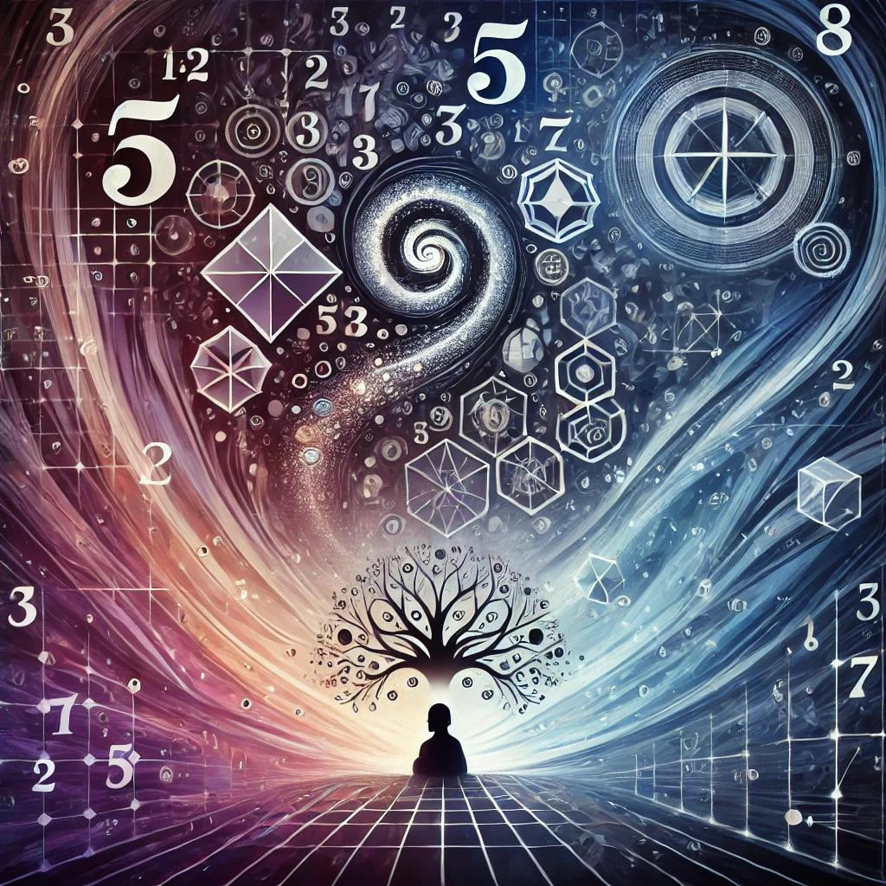
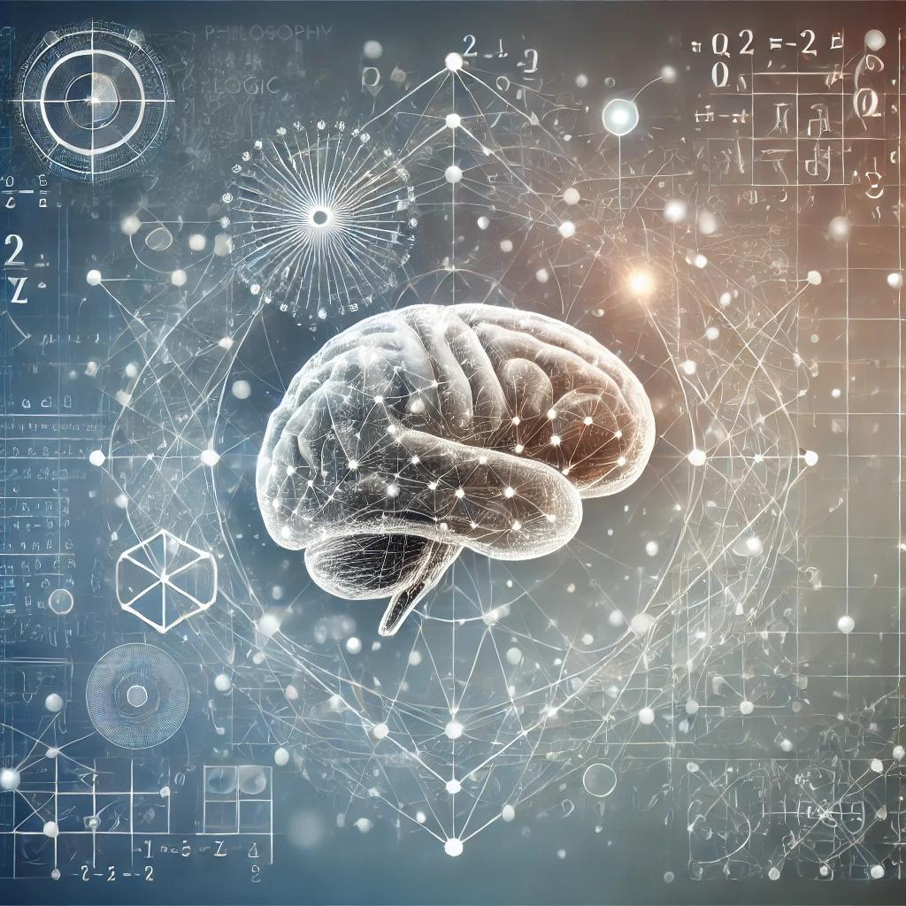
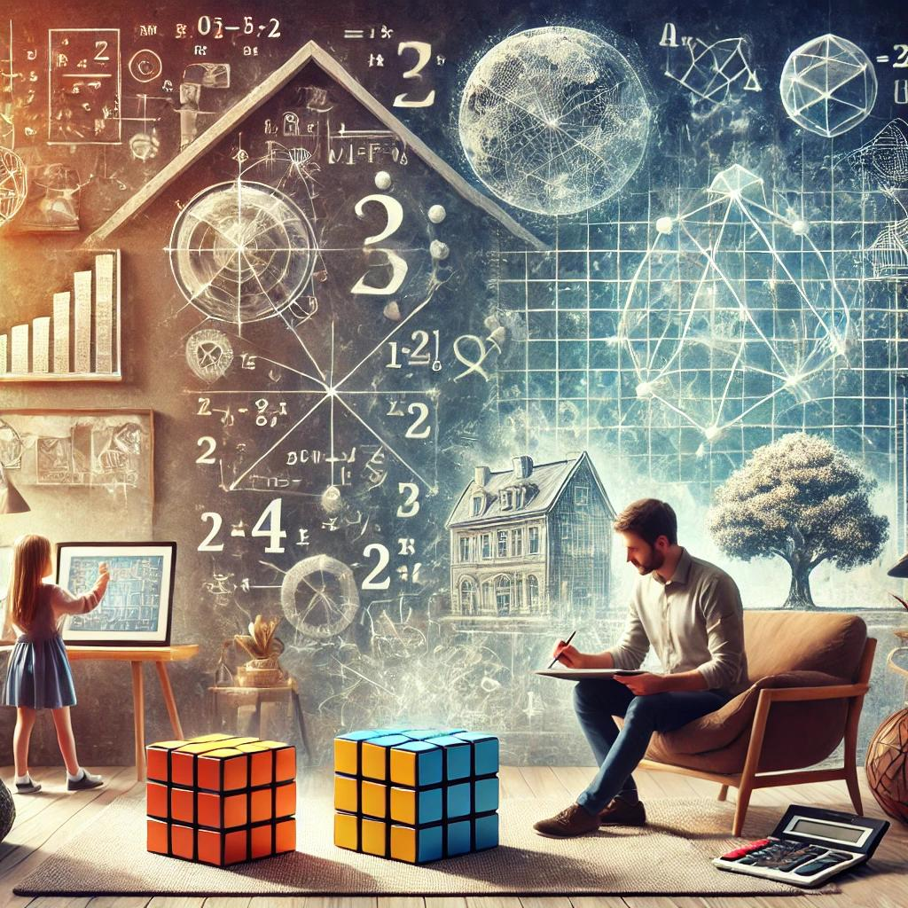

Pendahuluan

Filsafat matematika adalah cabang filsafat yang mempelajari dasar-dasar dan implikasi matematis.
Disiplin ini mencoba menjawab pertanyaan mendasar seperti "Apa itu angka?" dan "Bagaimana kebenaran matematika ditemukan?".
Filsafat matematika adalah cabang filsafat yang berfokus pada penyelidikan mendalam tentang dasar-dasar, struktur, dan implikasi dari matematika. Beberapa aspek utama yang sering dibahas dalam filsafat matematika meliputi:
1. Ontologi Matematika: Apakah entitas matematis seperti angka dan fungsi itu nyata? Ada perdebatan panjang antara pandangan yang melihat entitas matematis sebagai sesuatu yang objektif dan independen (seperti dalam Platonisme), dan pandangan yang melihat matematika sebagai hasil konstruksi manusia (seperti dalam Nominalisme).
2. Epistemologi Matematika: Bagaimana kita mengetahui kebenaran matematika? Apakah kebenaran matematika bersifat apriori (diketahui tanpa pengalaman) atau apakah mereka membutuhkan validasi empiris?
3. Hubungan Matematika dengan Dunia Nyata: Matematika digunakan untuk menjelaskan fenomena alam, namun bagaimana konsep abstrak tersebut bisa begitu efektif? Hal ini dikenal sebagai "keajaiban yang tidak masuk akal" dari matematika.
4. Implikasi Metafisik: Pertanyaan seperti apakah matematika ditemukan atau diciptakan sering menjadi dasar untuk memahami hubungan antara pikiran manusia dan realitas alam semesta.
5. Aplikasi Filosofis: Filsafat matematika tidak hanya terbatas pada teori; ia juga memiliki aplikasi dalam berbagai bidang lain, termasuk ilmu komputer, logika formal, ekonomi, dan fisika.
Cabang-Cabang Utama
Logika

Logika adalah cabang filsafat matematika yang mempelajari aturan-aturan formal untuk penalaran. Fokus utama logika adalah memahami bagaimana argumen dibangun, divalidasi, dan diterapkan dalam konteks matematika.
Ciri-ciri utama:
(a) Mengkaji struktur dan validitas argumen matematis.
(b) Menekankan pada konsistensi dan keakuratan sistem matematika.
(c) Mencakup teori seperti logika proposisional, logika predikat, dan teori himpunan.
Platonisme

Platonisme dalam filsafat matematika berpendapat bahwa entitas matematis (seperti angka, bentuk geometris, atau fungsi) memiliki eksistensi yang independen dan objektif, mirip dengan "dunia ide" yang diajukan oleh filsuf Yunani, Plato.
Ciri-ciri utama:
(a) Entitas matematis dianggap "abadi" dan "universal," terlepas dari keberadaan manusia.
(b) Matematika dianggap sebagai "penemuan" manusia, bukan ciptaan.
Formalisme
Formalisme melihat matematika sebagai sistem simbol dan aturan formal tanpa mengaitkannya dengan makna atau realitas eksternal.
Ciri-ciri utama:
(a) Fokus pada manipulasi simbol menurut aturan tertentu.
(b) Tidak mempermasalahkan apakah simbol tersebut memiliki makna filosofis atau realitas objektif.
Aplikasi dalam Kehidupan

Filsafat matematika membantu kita memahami bagaimana matematika memengaruhi ilmu pengetahuan, teknologi, dan cara kita memandang dunia. Filsafat matematika mempelajari dasar-dasar, prinsip, dan konsep-konsep matematika dari sudut pandang filosofis. Aplikasi filsafat matematika dalam kehidupan sehari-hari dapat ditemukan dalam berbagai aspek, baik dalam pemahaman kita terhadap dunia nyata maupun cara kita berpikir dan membuat keputusan. Berikut beberapa aplikasi filsafat matematika dalam kehidupan:
1. Pemahaman Struktur dan Logika: Filsafat matematika mengajarkan kita untuk berpikir secara logis dan sistematis. Dalam kehidupan sehari-hari, ini berguna saat kita memecahkan masalah atau mengambil keputusan yang memerlukan pemikiran rasional, seperti dalam perencanaan keuangan atau pengorganisasian waktu.
2. Konsep Abstraksi dan Pemodelan: Filsafat matematika membantu kita memahami bagaimana konsep-konsep abstrak dalam matematika, seperti angka, ruang, atau fungsi, digunakan untuk memodelkan fenomena di dunia nyata. Misalnya, teori probabilitas digunakan untuk memprediksi kejadian-kejadian di kehidupan nyata, seperti dalam dunia ekonomi atau kesehatan.
3. Penerapan dalam Teknologi: Aplikasi matematika dalam teknologi, seperti algoritma komputer, pemrograman, dan kecerdasan buatan (AI), berakar dari dasar filosofis matematika. Pemahaman tentang bagaimana matematika bisa diterapkan dalam berbagai bidang teknologi membantu kita dalam beradaptasi dengan kemajuan teknologi.
4. Analisis Etika dan Keputusan: Filsafat matematika juga menyentuh aspek etika, terutama dalam pembuatan keputusan yang melibatkan data dan analisis statistik. Pemahaman tentang bagaimana data dikumpulkan, diinterpretasikan, dan digunakan secara objektif adalah penting dalam membuat keputusan yang adil dan rasional.
5. Peran Matematika dalam Ilmu Pengetahuan: Matematika adalah bahasa universal dalam ilmu pengetahuan. Filsafat matematika membantu kita memahami bagaimana teori-teori matematika membentuk dasar bagi kemajuan ilmu pengetahuan dan teknologi, dari fisika hingga biologi. Ini memberikan perspektif bahwa matematika bukan hanya sekadar angka, tetapi juga alat untuk memahami dunia.